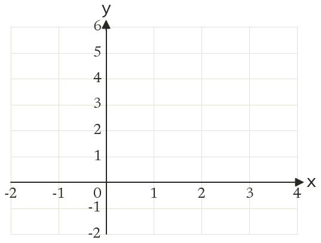
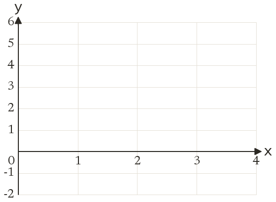
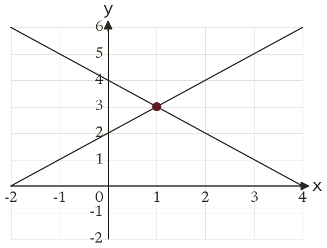
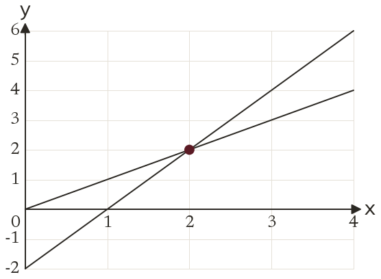

Westonbirt Maths · Simultaneous Equations and Graphs
Simultaneous Equations Graphically
Name: ______________________ Date: ____________
1
Draw and for from to
Where do they cross?
Where do they cross?
2
Draw and for from to
Where do they cross?
Where do they cross?
3
The lines and cross at What is the solution of the simultaneous equations?
4
Rearrange into the form = mx +
5
Does the point lie on both and ? What does that tell you?
Ext
On your grid for question draw as well. Where does it cross ?



